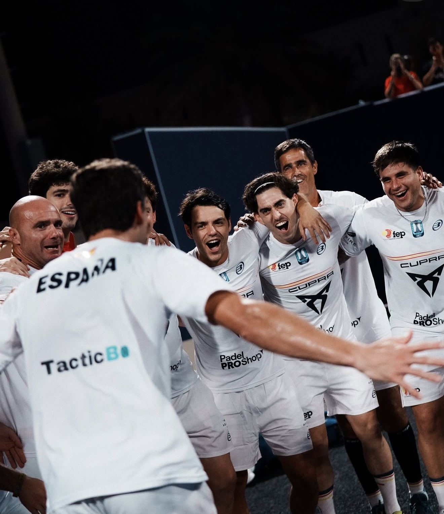

Actualidad · Mundial 2026
España y Argentina jugarán las dos finales del Mundial de Qatar
España ganó 2-0 a Portugal y ellas, 2-0 a Francia. Argentina, 2-0 a Italia en los dos cuadros. El sábado, doble final en Doha, como en 2021 y en 2024.
Por Luis González · · 3 min de lectura

Coello no jugó hoy.
Tapia, sí. Con Chingotto, el compañero de Galán. 6-3 y 6-2 a Italia.
Y pasó lo que se esperaba desde el sorteo: España contra Argentina en las dos finales del Mundial.
En Doha. Como en 2021. Como en 2024.
España: Goñi y Yanguas vuelven a remontar
España ganó 2-0 a Portugal.
- Aimar Goñi y Mike Yanguas: 4-6, 6-3, 6-2 a los hermanos Deus.
- Juan Lebrón y Paquito Navarro: 6-2, 6-4 a Araújo y Graça.
Jon Sanz y Javi Leal, que tenían el tercero, no jugaron.
Goñi y Yanguas perdieron el primer set. Como el lunes contra Suecia. Y como el lunes, le dieron la vuelta: una hora y 38 minutos de partido.

Lebrón y Paquito cerraron la eliminatoria en algo más de una hora.

España lleva trece partidos en el Mundial. Los ha ganado todos.
Argentina: Tapia y Chingotto, como en 2024
Argentina ganó 2-0 a Italia.
- Di Nenno y Augsburger: 6-1, 6-1 a Montiel y Abbate, en 49 minutos.
- Tapia y Chingotto: 6-3, 6-2 a Patiniotis y Brambilla.
Alfonso y Libaak no jugaron.
Tapia y Chingotto ya jugaron juntos la final de hace dos años. Ganaron su partido, contra Lebrón y Galán.
Argentina, campeona de los dos últimos Mundiales, lleva catorce partidos y catorce victorias.
Ellas: ni un set perdido
España ganó 2-0 a Francia.
- Paula Josemaría y Gemma Triay: 6-3, 6-1 a Godallier y Mansart.
- Claudia Fernández y Bea González: 6-0, 6-0 a Collombon y Bahurel, en 44 minutos.
Andrea Ustero y Martina Calvo no jugaron.
Catorce partidos en el Mundial. Catorce victorias. Ni un set perdido. Diecinueve juegos cedidos.
Van a por el séptimo Mundial seguido. El primero de Carolina Navarro como seleccionadora.
Argentina ganó 2-0 a Italia. Osoro y Fassio, 6-2, 6-2. Brea y Jensen, 6-2, 6-3.
Doha, por tercera vez
Doha ya tuvo Mundial en 2021 y en 2024. Las dos veces, las dos finales fueron España contra Argentina.
- 2021: ganó España las dos. En la masculina, Coello y Galán ganaron 6-1, 7-5 a Sanyo y Tapia.
- 2024: una para cada país. Ellas, 2-0 para España. Ellos, 2-1 para Argentina, con el último partido decidido en el tie-break del tercer set.
Las finales, este sábado
- 12:00: ellas. España contra Argentina.
- Después: ellos. España contra Argentina.
Horas de España; en Argentina, cuatro menos. Dónde verlo, aquí.
El sábado pasado, Coello y Tapia ganaban juntos en Kuwait. Gemma Triay y Delfi Brea, también.
Este sábado se juegan el Mundial.
Cada uno con su camiseta.
— Luis González
Publicidad

Publicidad